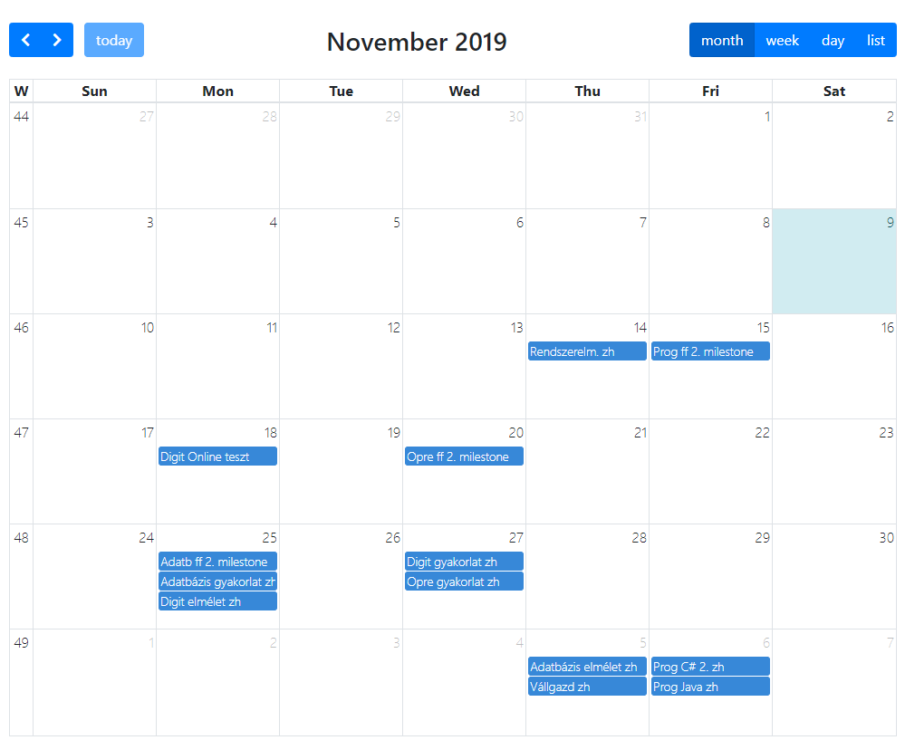

Adatb zh minta megoldás
--1.) Első feladat
--Írjon tárolt eljárást, mely a Tanulmányi Osztály ügyintézője számára lehetővé teszi hogy egy
--kurzusID alapján egy kurzus adatait tudja lekérni. Az eljárás a következőket írja ki:
--• kurzusnév
--• mi a kurzus tanulmányi átlaga
--• hány hallgató végezte el (az végezte el, aki 1-esnél jobb osztályzatot kapott)
--Ha a kapott kurzusID nem létezik, akkor írja ki, hogy: Nincs ilyen kurzus.
--Írjon példát az eljárás hívására is!
SET serveroutput ON;
CREATE OR REPLACE PROCEDURE tanulmanyi (kurzus INT) IS
kurzusnev VARCHAR2(50);
jegy NUMBER;
elvegezte NUMBER;
BEGIN
SELECT nev INTO kurzusnev FROM kurzusok WHERE kurzusID = kurzus;
SELECT ROUND(AVG(erdemjegy),5) INTO jegy FROM leckekonyv WHERE kurzusID = kurzus;
SELECT COUNT(kurzusID) INTO elvegezte FROM leckekonyv WHERE erdemjegy > 1 AND kurzusID = kurzus;
IF kurzusnev IS NOT NULL THEN
dbms_output.put_line('Kurzusnév: '||kurzusnev);
dbms_output.put_line('Kurzus átlag: '||jegy);
dbms_output.put_line('Elvégezte: '||elvegezte|| ' hallgató');
ELSE
dbms_output.put_line('Nincs ilyen kurzus.');
END IF;
END;
begin
tanulmanyi(11);
end;
--2,) Második feladat
CREATE OR REPLACE TRIGGER felvetel
BEFORE INSERT ON leckekonyv
FOR EACH ROW
DECLARE maxfo NUMBER(2);
felvettek NUMBER(3);
terem NUMBER;
BEGIN
SELECT kapacitas INTO maxfo FROM termek NATURAL JOIN kurzusok WHERE kurzusID = :new.kurzusID;
SELECT COUNT(neptunID) INTO felvettek FROM leckekonyv WHERE kurzusID = :new.kurzusID;
SELECT teremID INTO terem FROM termek NATURAL JOIN kurzusok WHERE kurzusID = :new.kurzusID;
IF maxfo > felvettek THEN
dbms_output.put_line('Sikeres tárgyfelvétel! Kapacitás felvétel előtt: '||maxfo||'/'||felvettek);
ELSE
UPDATE termek SET kapacitas= kapacitas + 10 WHERE teremID = terem;
dbms_output.put_line('Sikeres tárgyfelvétel! Betelt a terem, de módosítottuk a férőhelyek számát.');
END IF;
END;
SAVEPOINT mentes;
INSERT INTO leckekonyv VALUES (202, 'OEM5G1', 378, 68, NULL, NULL);
ROLLBACK TO mentes;
--3.) feladat
-- a) Mely hallgatók teljesítettek több kreditet az átlagnál? (gyűjtött kreditek: ami nem elégtelen)
SELECT h.neptunID, vnev||' '||knev Hallgató, összkredit FROM hallgatok h
INNER JOIN
(
SELECT neptunID, SUM(kredit) összkredit FROM kurzusok
INNER JOIN leckekonyv USING(kurzusID)
WHERE erdemjegy > 1
GROUP BY neptunID
) okr
ON h.neptunID = okr.neptunID
WHERE összkredit >
(
SELECT AVG(kredit) FROM kurzusok NATURAL JOIN leckekonyv
)
ORDER BY összkredit;
-- b)Kik azok az oktatók, akiknek a kurzusait senki nem vette fel? Használjon halmazműveletet!
SELECT o.oktatoID, vnev||' '||knev Oktató FROM oktatok o INNER JOIN
(
SELECT oktatoID FROM oktatok MINUS SELECT oktatoID FROM leckekonyv
) s
ON o.oktatoID = s.oktatoID;
-- c) Hogy hívják és hány tanítványa van a legjobban kereső oktatónak?
SELECT vnev||' '||knev Oktató,
(
SELECT COUNT(neptunID) FROM leckekonyv WHERE oktatoID = o.oktatoID
) Tanítványok
FROM oktatok o
WHERE fizetes = (SELECT MAX(fizetes) FROM oktatok);
-- d) Listázza ki annak az első 5 oktatónak a nevét és fizetését, akiknek legalább 3-mas az értékelésük.
SELECT vnev||' '||knev Oktató, fizetes Fizetés, Tárgyak FROM oktatok NATURAL JOIN
(
SELECT oktatoID, COUNT(*) Tárgyak FROM leckekonyv
GROUP BY oktatoID HAVING AVG(ertekeles) >= 3
)
FETCH FIRST 5 ROWS ONLY;
-- e)
SELECT h.neptunID Neptun, vnev||' '||knev Név, email Email, Tárgyak, Átlag, Kreditek FROM hallgatok h
INNER JOIN
(
SELECT neptunID, COUNT(kurzusID) Tárgyak, ROUND(AVG(erdemjegy),2) Átlag, SUM(kredit) Kreditek
FROM leckekonyv INNER JOIN kurzusok USING(kurzusID)
WHERE erdemjegy > 1
GROUP BY neptunID
) targy
ON h.neptunID = targy.neptunID
ORDER BY Név;
--f) Adjon a 200.000 Ft alatt kereső oktatónak 15%-os fizetésemelést!
UPDATE oktatok SET fizetes = fizetes * 1.15
WHERE fizetes kacsacsorjobbra 200000; Opre ZH követelmények
- legyen futtatható a script
- menüt kell tudni írni
- date parancs használata
- változók kezelése
- paraméterek elérése
- szöveg bekérése
- különböző idézőjelek használata
- expr parancs matematikai műveletek használata
- elágazások (feltételben pl. létezik-e a fájl)
- ciklusok (kérj be számot, annyiszor fusson le valami)
- esetleg fájl listán kell végigmenni
- while és until ciklus használata (until biztosan lesz)
- reguláris kifejezések, greppellés (egyszerűbbek, pl ezzel kezdődik egy szó: e stb...)
- sed használata: csak a csere verzió
- cut és wc parancsok
- chmod, chown használata
Rendszerelmélet előadások
Ákos rendszerelmélet feladatok PDF-eVállgazd
Boti feladatokDigit gyakorlati anyagok
Kidolgozott példák fájlokkal Kapcsolás képek Kidolgozott példák pdf-ben összegyűjtve Random digites driveProgos linkek
C#
Prog 3 website Sipos Miki oldala Kovi oldalaJava
Java nik-website Homonnai oldala Pósfai oldala Videós Java segítség

Határidők naptára
Itt megtekintheted a legfrisebb határidőnaplót, mely tartalmazza a zh-k, és a féléves feladatok leadási határidejeit.
Határidőnapló